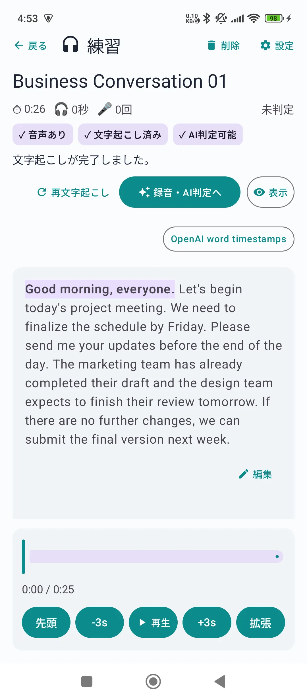
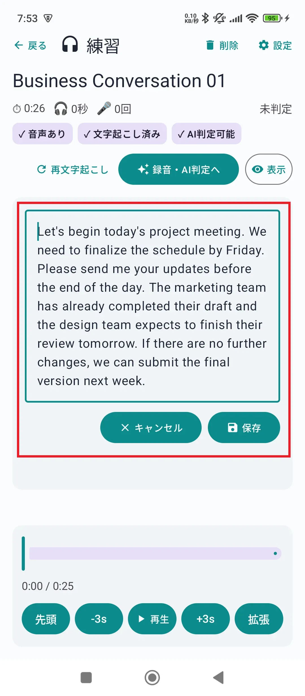
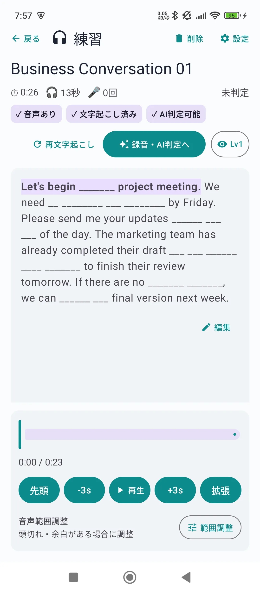
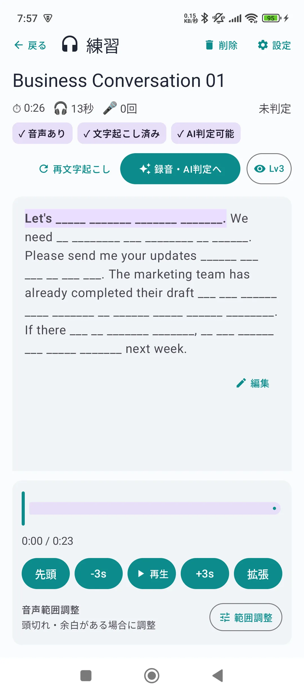
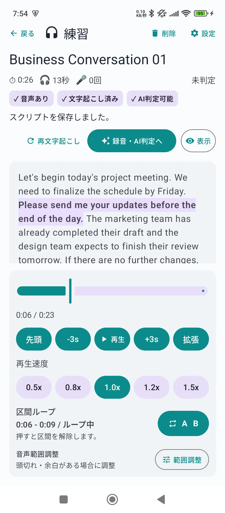
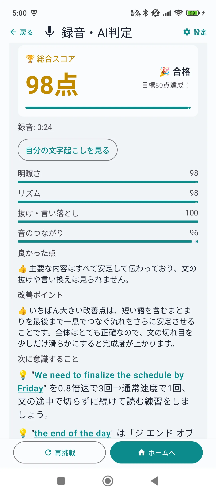

お気に入りの英語音声や、繰り返し聞きたい教材を使ってシャドーイングしたいと思ったことはありませんか。
MP3は手軽に保存できますが、スクリプトがない、同じ場所を繰り返しにくい、自分の発音を確認しにくいといった問題があります。
この記事では、無料の英語シャドーイングアプリ ShappyAI を使って、手持ちのMP3を追加し、AI文字起こしから練習、録音、AI判定まで進める方法を紹介します。
MP3でシャドーイングするメリット
市販教材だけでなく、自分が興味を持てる音声を使えることが、MP3で練習する大きなメリットです。
- 自分のレベルや目的に合う英語音声を選べる
- 聞き慣れたい話者や場面を繰り返し練習できる
- 短い区間に絞って、苦手な英文だけ反復できる
- 同じ教材を使って、聞く・話す・録音する練習を続けられる
購入した教材や配信音声を利用する場合は、著作権や利用規約を確認し、自分に利用権限のある音声を使用してください。
ShappyAIでMP3を教材にする手順
STEP1：MP3を追加する
ShappyAIのホーム画面から「+MP3追加」を選び、端末に保存されているMP3ファイルを追加します。
最初は30秒から1分程度の短い音声がおすすめです。長い音声よりも文字起こしの確認がしやすく、同じ範囲を繰り返して練習しやすくなります。
STEP2：AIで文字起こしする
MP3を追加すると、英語音声をAIで文字起こしできます。スクリプトを最初から手入力する必要はありません。
文字起こしの精度は、録音状態や話者の人数、BGMの大きさなどによって変わります。音声が聞き取りにくい場合は、短い区間に分けて試すと確認しやすくなります。

STEP3：スクリプトを確認・修正する
AI文字起こしが終わったら、音声を聞きながらスクリプトを確認します。固有名詞や数字などが違っている場合は、練習前に修正しておきましょう。
完璧に整えることよりも、実際に聞こえる英語と文章が対応していることが大切です。

STEP4：音声を聞いてシャドーイングする
音声を再生し、聞こえた英語の少し後を追うように発話します。最初から全文を暗記する必要はありません。
- スクリプトを見ながら音声を聞く
- 英文を見ながら、音声の直後にまねして話す
- 慣れたらスクリプトを少しずつ隠す
- 最後はできる範囲で、文字を見ずに発話する
ShappyAIでは、スクリプトの表示レベルを切り替えられます。いきなり全文を隠すのではなく、少しずつ情報を減らせるため、初心者でも段階的に練習できます。


STEP5：苦手な区間を繰り返す
聞き取れない部分や言いにくい部分は、区間ループを使って反復します。長い音声を最初から何度も再生するより、苦手な数秒だけに絞る方が効率的です。
再生位置を前後に調整しながら、ひとまとまりの意味やリズムが切れない範囲を選びましょう。

STEP6：録音してAI判定を確認する
練習後は自分の声を録音し、AI判定で結果を確認します。ShappyAIでは、明瞭さ、リズム、抜け・言い落とし、音のつながりなどをもとにフィードバックします。
点数だけを見るのではなく、「どの部分を次に直すか」を一つ決めて、もう一度録音するのがおすすめです。

初心者におすすめの練習方法
初めてシャドーイングする場合は、次の順番で進めると無理がありません。
- 短い英文を選ぶ
- 意味とスクリプトを確認する
- 音声に合わせて英文を読む
- 音声の少し後を追って話す
- 録音を聞き、直すポイントを一つだけ決める
1回で完璧に言えることより、毎日5分でも同じ練習を続ける方が大切です。
実際に使って感じたこと
私はTOEICで860点を取得し、現在は900点を目標に英語学習を続けています。市販教材を使った練習は効果的ですが、自分が聞きたい音声や苦手な英文でも、もっと手軽にシャドーイングしたいと感じていました。
そこで、MP3追加、AI文字起こし、区間ループ、録音、AI判定までを一つのアプリで進められるようにShappyAIを作りました。
特に便利だと感じるのは、スクリプトを少しずつ隠せることです。全文表示からいきなり非表示にするのではなく、自分の慣れ具合に合わせて負荷を上げられます。
こんな人におすすめ
- 手持ちの英語MP3をシャドーイング教材にしたい人
- スクリプトのない音声をAIで文字起こししたい人
- TOEICや英会話の音源を繰り返し練習したい人
- 自分の録音を確認しながら発音を改善したい人
- 短時間でも毎日英語を話す習慣を作りたい人
よくある質問
MP3なら何でもシャドーイング教材にできますか？
英語音声が入ったMP3であれば利用できます。ただし、音質が極端に悪い音声、複数人が同時に話す音声、BGMが大きい音声では文字起こしの精度が下がることがあります。利用権限のある音声を使用してください。
AI文字起こしにはどれくらい時間がかかりますか？
音声の長さや通信環境によって異なります。最初は短い教材から試すと、文字起こし後の確認や修正もしやすくなります。
シャドーイング初心者でも使えますか？
利用できます。最初は短い英文を選び、スクリプトを表示した状態で音声をまねし、慣れてから少しずつ文字を隠す方法がおすすめです。
ShappyAIは無料で使えますか？
ShappyAIは無料で利用できます。AI文字起こしとAI判定には1日の無料利用回数があり、リワード広告の視聴で利用回数を追加できます。
まとめ
手持ちのMP3は、AI文字起こしを使えば自分専用のシャドーイング教材として活用できます。
ShappyAIなら、MP3追加、スクリプト確認、区間ループ、録音、AI判定までを一つのアプリで進められます。まずは短い音声を一つ追加し、毎日5分から試してみてください。
ShappyAIでシャドーイングを始める
同梱教材や手持ちのMP3を使って、英語シャドーイング練習を始められます。